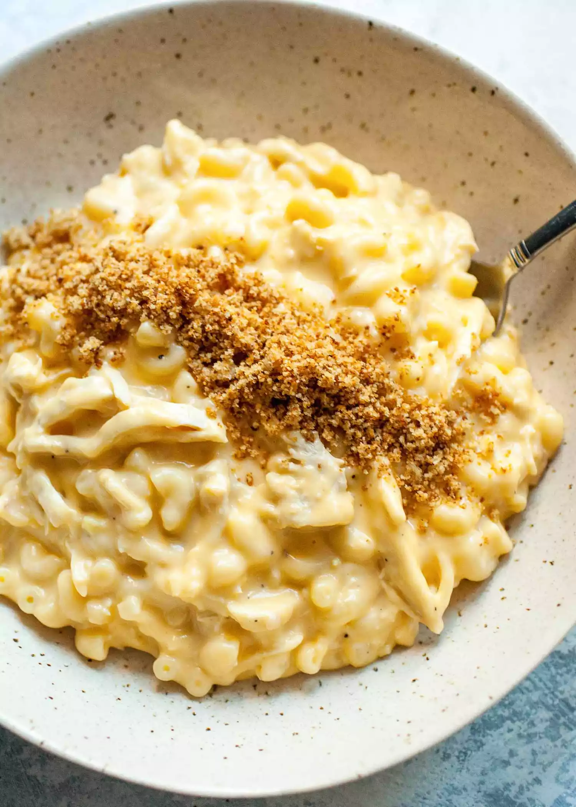

Easy chicken mac and cheese

Description
Chicken and cheese are made for each other in the ultimate
comfort food - easy chicken mac and cheese. Top with crispy
breadcrumbs for the perfect finish!
Ingredients
For the chicken mac and cheese:
- 8 ounces dry macaroni
- 1/2 onion sweet onion, chopped
- 1 clove garlic, minced
- 1/4 cup unsalted butter
- 3 tablespoons all-purpose flour
- 2 cups whole or 2% milk
- 2 cups grated cheddar cheese
- 1 teaspoon dried mustard(optional)
- 2 cups shredded cooked chicken
- 1/4 teaspoon salt
- 1/4 teaspoon black pepper
For the crispy breadcrumbs:
- 2 tablespoons unsalted butter
- 3/4 cup breadcrumbs, such as panko
Steps
- Cook the pasta:
Bring a pot of salted water to a boil and cook the
pasta until al dente, or according to package
instructions. Drain and rinse with cold water to stop
the cooking and keep the pasta from sticking together.
Set aside.
- Cook the onions and garlic:
In a large pot over medium heat, add butter. Once the
butter is melted, add chopped onions and cook for a few
minutes until they turn translucent. Then add garlic
and cook for another 30 seconds. Stir the flour into
the onion and garlic mixture and cook for a minute.
- Stir in the milk, mustard and cheese:
Slowly add the milk while stirring. The flour and
onion mixture will thicken as you add the milk.
Once all the milk is added, stir in the grated cheese
and mustard. Continue to cook, stirring occasionally,
until the cheese has melted.
- Stir the chicken and pasta into the sauce:
Once the cheese is melted, stir in the chicken and
cooked pasta. Taste and season with salt and pepper as
needed.
- Cook the breadcrumbs:
Whenever you have a few spare moments while assembling
this pasta (like, while cooking the onions or while
waiting for the cheese to melt), cook the breadcrumbs.
Melt the butter in a small skillet over low heat. Stir
in the breadcrumbs until well combined. Continue to
stir over low heat until the breadcrumbs are browned, 3
to 4 minutes. Remove from the heat and let cool.
Breadcrumbs can also be toasted ahead of time and stored
in an airtight container.
- Serve:
Ladle the cheesy chicken macaroni right out of the pot
when it's super creamy, and top it with crispy
breadcrumbs.